From profile to offer, one step at a time.
Coach Rose Nylund's Job Coach scores every job against what you want, tailors your résumé from facts you already have, shows honest odds at each stage, and helps you rehearse out loud. Set up once, then every job flows from fit to offer.
Runs in Edge or Chrome on a desktop. No account, no sign-in, no cost. Everything you enter stays in your own browser.
Set up once, then every job flows from fit to offer
Four stages and six numbered steps. The learning loop compares the odds Rose showed you with what actually happened, so the estimates get more honest over time.
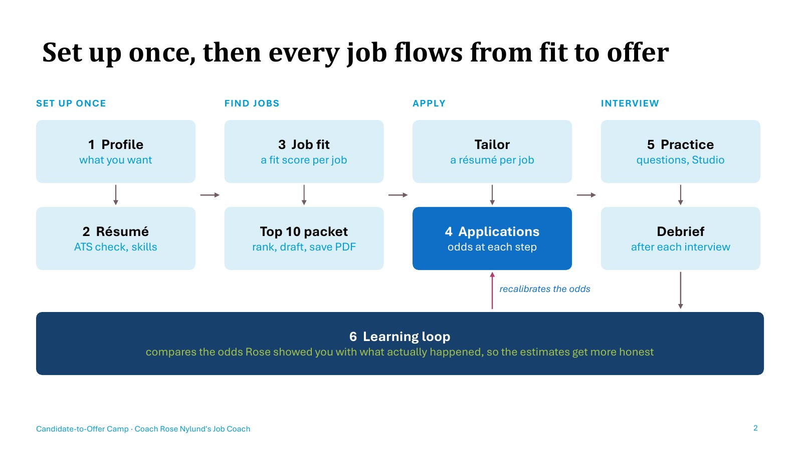
Profile
Tell Rose your target role, mobility, salary floor and key skills. Every score is weighed against it.
Résumé check
See what an ATS sees, and which keywords a posting wants that your résumé doesn't say.
Job fit
A fit score per job: skills 30%, experience 20%, and education, location, salary, culture and trajectory 10% each.
Applications & odds
Rose estimates your chance of clearing each next step and updates it after every debrief.
Practice
A question bank written from the job, your background and your gaps, sent straight to the Interview Studio.
Learning loop
Your funnel against a benchmark, plus a Brier score that shows how honest the odds have been.
Every tab has one job and a clear finish line
These match the sections of the user guide and the recorded walkthrough. Each one tells you when you're done.
Profile
Fill in role, mobility, salary and skills, add a short background summary, then Save profile.
Done when your profile is saved.
Résumé check
Paste your résumé, pick a job, press Check my résumé. Add missing keywords only if they're true.
Done when every fixable check is green.
Tailor
Your master résumé is the only source of facts. Gaps become questions, never claims.
Done when the final version passes Check it.
Job fit
Save each job with its full description, rate culture and trajectory, and read the score breakdown.
Done when each job is saved and its gaps noted.
Top 10 packet
Find openings with any AI that searches the web, rank the best ten, and save a printable packet.
Done when the packet and tracker are saved.
Applications & odds
Press I applied, keep the stage current, and use Boost factors to see what would raise your odds.
Done when every application shows its stage.
Debrief
Log each interview the same day. A specific next step or decision date says more than how friendly it felt.
Done when the follow-up is sent.
Practice & Studio
Build the question bank, record STAR answers of 2 to 4 minutes, and let Rose score them.
Done when you've scored at least 5 answers.
Learning loop
Nothing to fill in. Review your funnel monthly; under 20 outcomes, treat it as an early signal.
Done when closed applications are marked.
Jump straight in
The Job Coach and the Interview Studio share your browser's storage, so jobs and question banks move between them on their own.
What you'll see
Shown with a fictional candidate and fictional employers. Click any preview to open it full size.

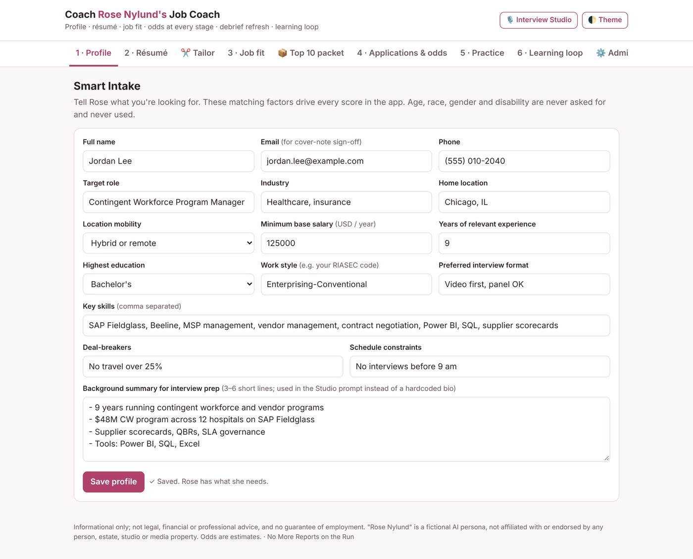

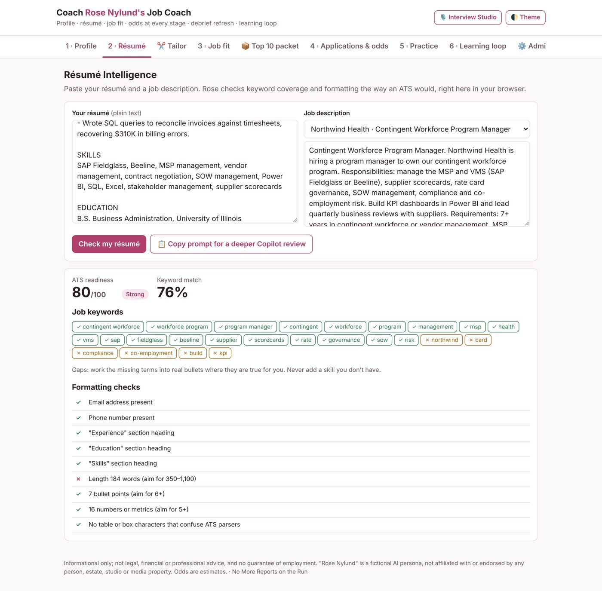

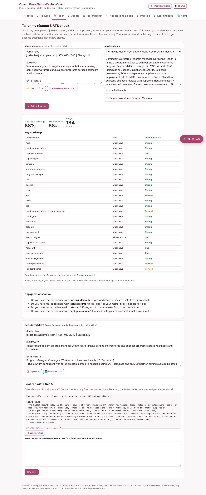

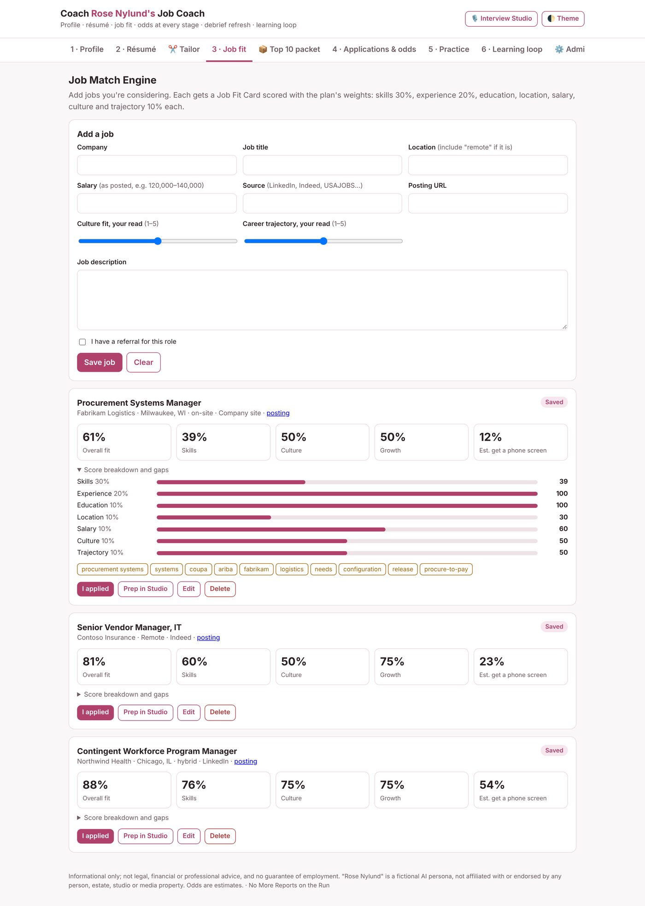

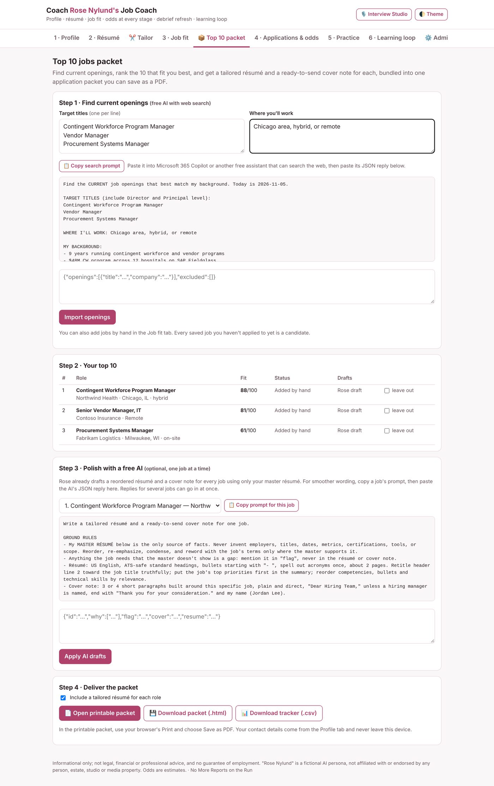

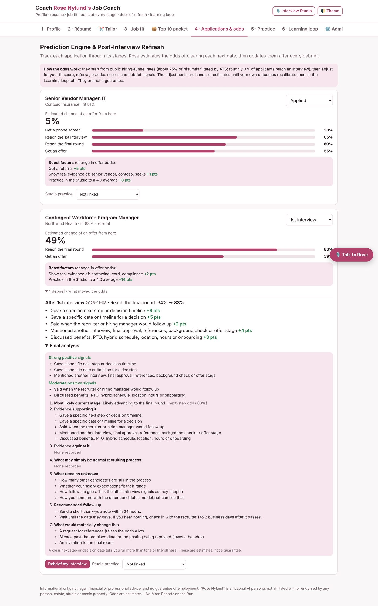

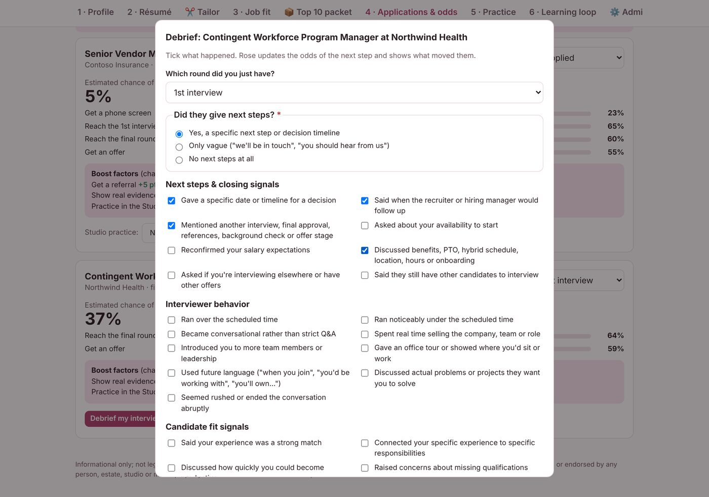

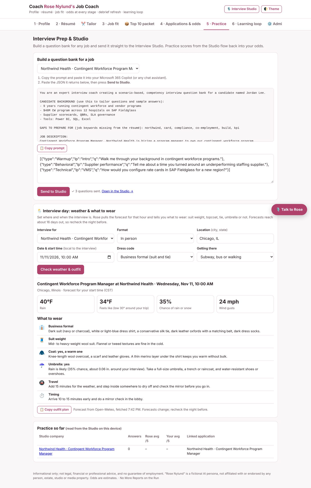

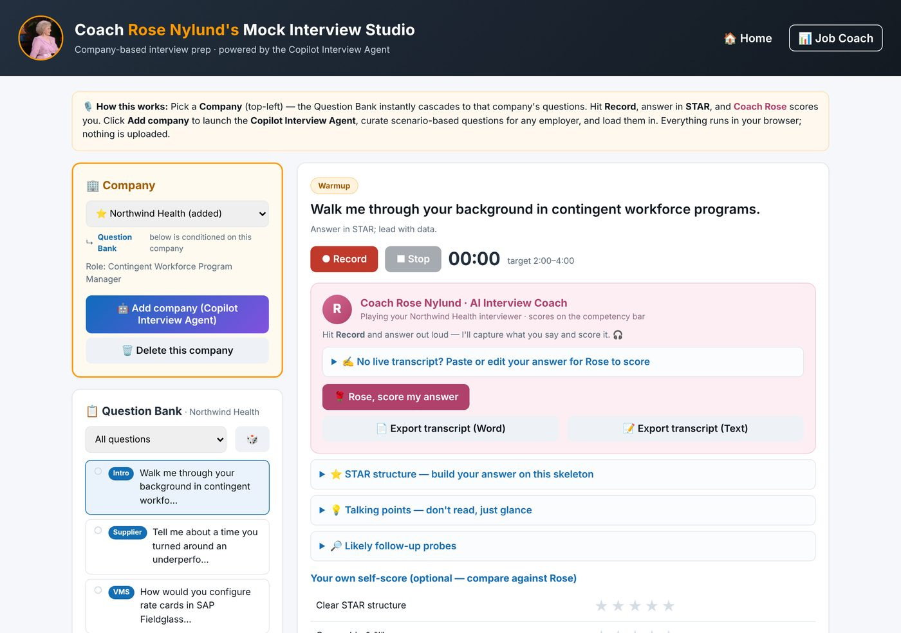

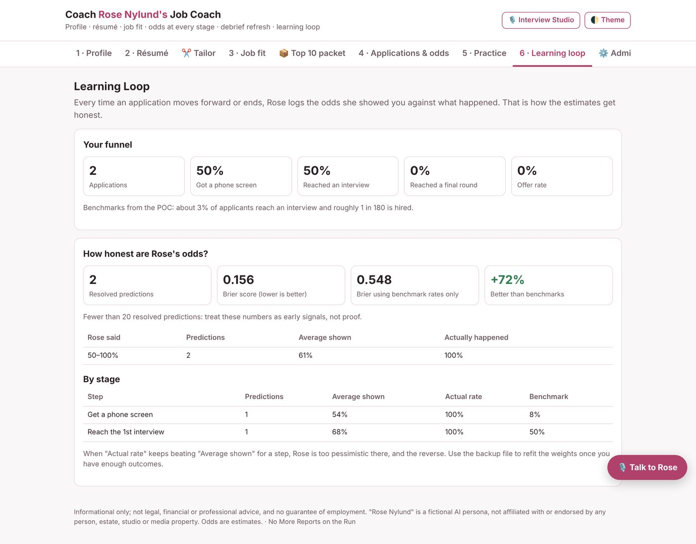

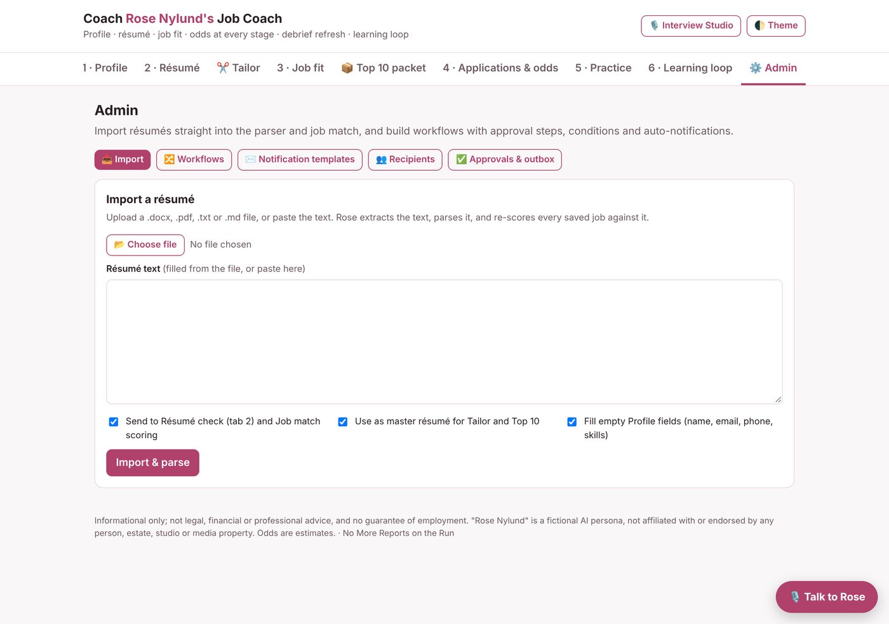

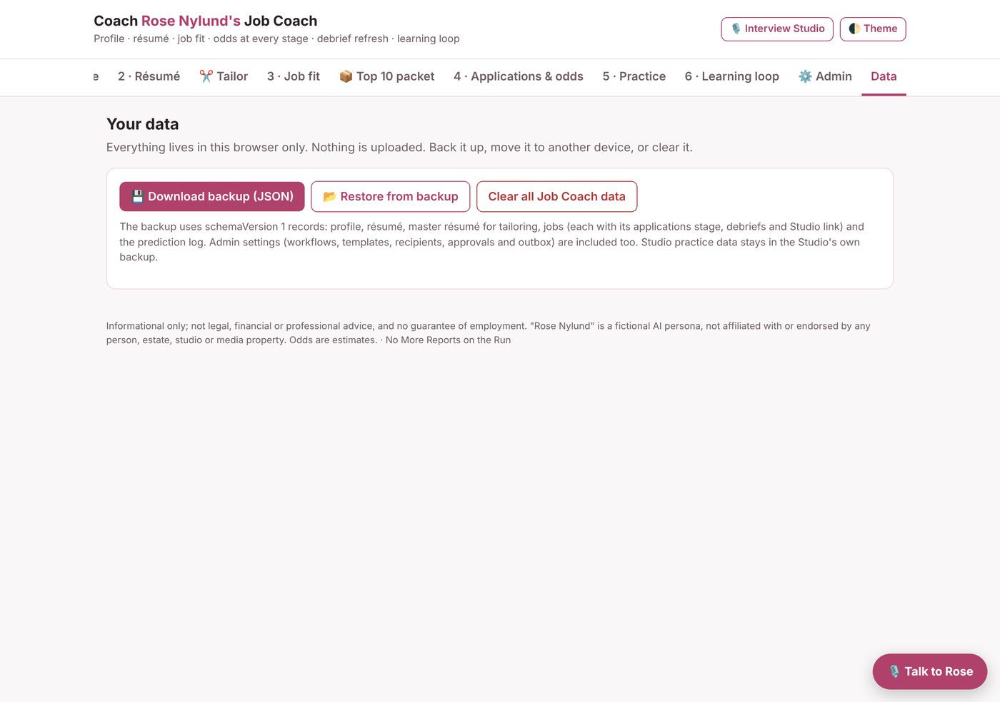
A little, often
Once you're set up, this is the whole routine.
| When | Do this | Tab |
|---|---|---|
| A posting you like | Save it and read its Job Fit Card | Job fit |
| Before each application | Tailor your résumé and pass Check it | Tailor |
| After you apply | Press I applied | Job fit |
| Once a week | Refresh your top 10 and save the packet | Top 10 packet |
| Interview booked | Build the question bank and practice | Practice, Studio |
| Same day as the interview | Debrief and send the follow-up | Applications |
| When you hear back | Update the stage | Applications |
| Once a week | Download a backup | Data |
| Once a month | Review your funnel | Learning loop |
Non-negotiables
The rules the Job Coach follows for every candidate.
- Your data stays with you. Saved in this browser only. Nothing is uploaded.
- Free and open. No account, no sign-in, no cost.
- Facts only. Tailored résumés use only what's in your master résumé. Gaps become questions, never claims.
- Fair by design. Never asks for or uses age, race, gender or disability.
- Honest odds. Estimates are checked against real outcomes, and small samples are flagged as early signals.
- You own the backup. Download, move or clear your data any time from the Data tab.
Candidate-to-Offer Camp, 17 pages
Before you start, then each tab step by step with a "done when" check, the weekly rhythm, and how to back up your data.
Walkthrough slideshow with script
The same guide as a PowerPoint slideshow, with a recording script in the speaker notes. Opens straight into presenting mode.